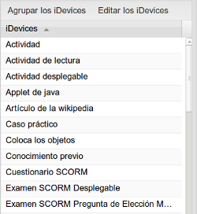
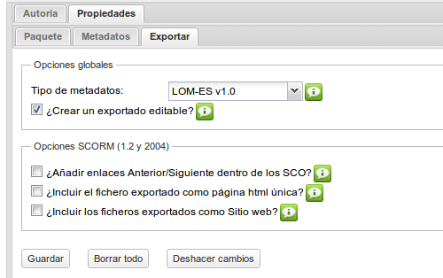

iDevices y Área de trabajo
iDevices
Los iDevices son elementos que nos permiten incluir diversos tipos de contenidos. Los organizaremos por categorías, atendiendo al tipo de acción o presentación que realizan.
- iDevices de presentación de información de forma textual
- iDevices de actividades no interactivas : proponen actividades que no se pueden contestar directamente.
- iDevices de actividades interactivas : permiten al alumno interactuar directamente con el objeto.
- iDevices de presentación de información no textual : imágenes, archivos y páginas web.
- iDevices experimentales: son actividades en desarrollo, no siendo aconsejables su uso. Sólo a modo de prueba.
Desagrupar / Agrupar iDevices
Este botón permitirá mostrar los iDevices por categorías u ordenados alfabéticamente.
Editar los iDevices
Con esta opción elegiremos los idevices que queremos mostrar. Sólo tendremos que seleccionarlos y guardar los cambios.
Practica eXe: oculta y muestra iDevices
Realiza los siguientes procedimientos:
- Abre miarchivo.elp de tu carpeta "Curso de eXe Learning".
- En Editar los iDevices, muestra el iDevice "FPD - Actividad de Elección Múltiple".
- Haz clic en el botón "Guardar los iDevices". (Observa que aparece en el listado de iDevices)
- Repite el proceso esta vez ocultando el iDevice que has mostrado anteriormente.
Si tienes dificultades, visualiza el siguiente vídeo.
Área de trabajo: "Autoría"
Esta es la pestaña que utilizaremos para incluir los iDevices y nuestros contenidos. La pestaña "Autoría" es nuestra zona de trabajo y creación.
Área de trabajo: "Propiedades"
Al pulsar en la pestaña "Propiedades" nos encontraremos tres pestañas:
"Paquete": podremos realizar la catalogación y completar los datos de nuestro proyecto:
- Título: permite incluir el título del proyecto. Aparecerá en la parte superior del objeto creado en la mayoría de los estilos.
- Idioma: selecciona el idioma de tu contenido. Aparece por defecto el idioma seleccionado en Utilidades > Preferencias.
- Descripción - General: resumen de los contenidos del recurso.
- Descripción - Objetivos: enumeración de los objetivos que se pretenden con el recurso.
- Descripción - Conocimiento previo: requisitos necesarios o aconsejables para comenzar a trabajar el recurso.
- Autor: permite incluir el nombre del autor del proyecto.
- Licencia: da la opción de seleccionar el tipo de licencia del contenido. ¡Se valiente y licencia tus contenidos con CC by sa! Compartiendo ganamos todos.
- Tipo de recurso educativo: selecciona en el desplegable el tipo de recurso que más se adapta al tuyo.
- Especificaciones de utilización: selecciona aquellas opciones que más se adecuan a tu recurso.
- Fondo de la cabecera: permite insertar una imagen que se mostrará en la parte superior izquierda de las páginas del proyecto. Prodrá repetirse y quedará por debajo del título. Esta opción no está habilitada en todos los estilos.
- Pie de página: da la posibilidad de incluir un pie de página.
- Descripción: permite introducir una breve descripción del proyecto.
- Taxonomía: da opción de modificar los nombres por defecto de los nodos en su creación.
- Opciones avanzadas: podremos marcar la casilla de compatibilidad con versiones anteriores de eXe. Esta opción elimina en el paquete los metadatos introducidos en esta pestaña.
"Metadatos": son datos que describen otros datos. En general, un grupo de metadatos se refiere a un grupo de datos, llamado recurso. El concepto de metadatos es análogo al uso de índices para localizar objetos en vez de datos. Por ejemplo, en una biblioteca se usan fichas que especifican autores, títulos, casas editoriales y lugares para buscar libros. Así, los metadatos ayudan a ubicar datos. (Obtenido de Wikipedia)
- Dublin Core es un modelo de metadatos elaborado y auspiciado por la DCMI (Dublin Core Metadata Initiative).
- LOM (Learning Object Metadata) es un modelo de datos utilizado para etiquetar y describir un objeto de aprendizaje y otros recursos digitales similares. Gracias a su uso en la catalogación del objeto, se hace más sencillo encontrarlo con posterioridad en los bancos de recursos.
- LOM es un estándar internacional y su adaptación al contexto educativo español es LOM-ES ( http://educalab.es/intef/tecnologia/recursos-digitales/lom-es)
El uso de metadatos es muy importante para que tus recursos sean fácilmente encontrables por los buscadores y en los repositorios especializados de objetos educativos.
Si has rellenado las opciones de la pestaña paquete, cumplirás los requisitos de la catalogación mínima LOM-ES. Anímate a informar de tus contenidos con los metadatos.
"Exportar": en la nueva versión de eXe, todos los exportados de contenidos generados con la herramienta serán editables por defecto. Esto es, podremos abrir con eXe paquetes scorm, ims, html,... que hayan sido generados con esta versión además de los propios paquetes de eXe (.elp). La opción de catalogación por defecto será LOM-ES.

Practica eXe: eres autor
Realiza los siguientes procedimientos:
- Abre miarchivo.elp de tu carpeta "Curso de eXeLearning".
- Completa los elementos de la pestaña "Paquete". Recuerda guardar los cambios del formulario en el botón Guardar.
- Guarda el archivo modificado.
Si tienes dificultades, visualiza el siguiente vídeo:
CeDeC. eXeLearning. Catalogación básica. Pestaña propiedades. (CC by)
Obra publicada con Licencia Creative Commons Reconocimiento Compartir igual 4.0